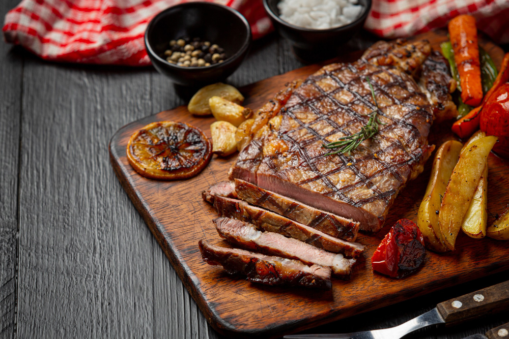
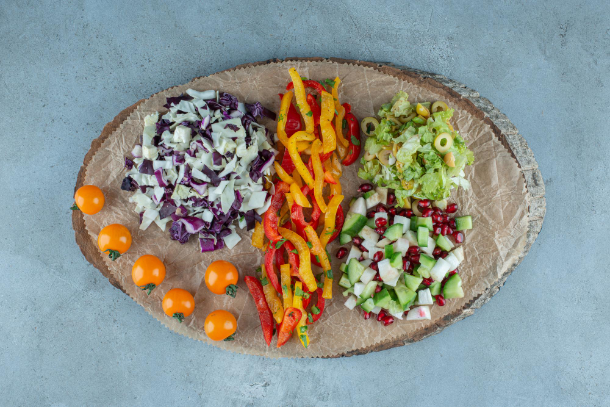

PARRILLA ARGENTINA La carne argentina tiene estatus de inigualable. En Carne Argenta seleccionamos los mejores cortes de las razas Hereford y Aberdeen Angus. Al momento de apreciar un rico corte de carne lo ideal es comerlo jugoso y para eso debe respetarse una regla de oro: los comensales deben esperar a la carne y no al revés.

